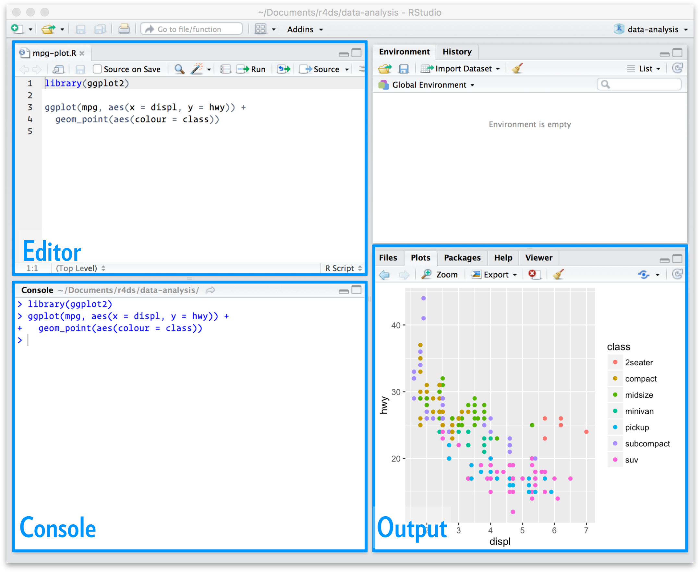

[1] 5Connecticut Sports Analystics Symposium 2025
Department of Statistics | University of Connecticut
April 11, 2025, 1:00-2:10
This workshop is a part of Connecticut Sports Analytics Symposium (CSAS) 2025.
This workshop aims to give a quick tour of R.
All source codes of related documents of this workshop are in the GitHub repository: https://github.com/statlucy/CSAS2025_intro_to_R.
R Basics
Data importation
Data Manipulation
Data Visualization
Language and environment for statistical computing
Based on the (proprietary) S language, but open source and open development
Homepage: https://www.r-project.org
The Comprehensive R Archive Network (CRAN): https://cran.r-project.org
FAQ: https://CRAN.R-project.org/doc/FAQ/R-FAQ.html
RStudio is an integrated development environment (IDE) for R.
It’s got everything you need to do data science in R
This IDE is one of the better reasons to use R

Create a new R script using File > New File > R Script.
You can do basic computations in R, either on the command line (in the console) or by writing things in the script and executing the code in the console.
Assign a value to a name using <-, ->, or =.
Example:
[1] 58.81727 60.81727 63.81727 66.81727<-/-> and =:
<- and -> are the traditional assignment operators in R. They are used to assign values to variables.= is also used for assignment, but it’s more commonly used within function calls to assign values to arguments.You can also apply functions to objects.
[1] 0.30178888 0.03798359 0.21029367 0.93383069 0.26233640 0.79855055
[7] 0.62284648 0.25843405 0.82302794 0.57647565 0.18993533 0.93182781
[13] 0.78425096 0.99003320 0.01302616 0.16318950 0.13693960 0.69421181
[19] 0.40630690 0.59507344We’ve now created two variables, x and y, which exist in the environment. You can see everything in the environment using ls(), or check out the environment pane in RStudio.
First, let’s create a local R project. Move the dataset into your directory and start a new R file.
install.packages(“package_name”)
library(package_name)
There are two kinds of paths: - Absolute: a file or folder’s “full address” on your computer - Relative: directions to a file or folder from your current working directory
The absolute path to my csv file is
[1] "C:/Users/statl/Documents/GitHub/CSAS2025_intro_to_R/statcast_data.csv"A relative path to the same file as the absolute path above is
[1] "./statcast_data.csv"Check variables.
spc_tbl_ [999 × 113] (S3: spec_tbl_df/tbl_df/tbl/data.frame)
$ pitch_type : chr [1:999] "FF" "CH" "SI" "KC" ...
$ game_date : chr [1:999] "4/2/2024" "4/2/2024" "4/2/2024" "4/2/2024" ...
$ release_speed : num [1:999] 95 88.5 95 80.8 95.4 90.7 91.8 94 89.9 93.4 ...
$ release_pos_x : num [1:999] -2.01 -2.09 -2.02 -3.13 -1.95 -1.26 1.75 -1.9 -1.14 -3.17 ...
$ release_pos_z : num [1:999] 5.22 4.95 5.12 5.61 5.12 5.13 4.89 4.99 5.01 5.63 ...
$ player_name : chr [1:999] "Rocchio, Brayan" "Rocchio, Brayan" "Rocchio, Brayan" "Rizzo, Anthony" ...
$ batter : num [1:999] 677587 677587 677587 519203 595978 ...
$ pitcher : num [1:999] 622491 622491 622491 668678 622491 ...
$ events : chr [1:999] "single" NA NA "field_out" ...
$ description : chr [1:999] "hit_into_play" "foul" "called_strike" "hit_into_play" ...
$ spin_dir : logi [1:999] NA NA NA NA NA NA ...
$ spin_rate_deprecated : logi [1:999] NA NA NA NA NA NA ...
$ break_angle_deprecated : logi [1:999] NA NA NA NA NA NA ...
$ break_length_deprecated : logi [1:999] NA NA NA NA NA NA ...
$ zone : num [1:999] 3 4 2 13 5 11 11 9 12 13 ...
$ des : chr [1:999] "Brayan Rocchio singles on a pop up to left fielder Dominic Canzone. Bo Naylor to 2nd." "Brayan Rocchio singles on a pop up to left fielder Dominic Canzone. Bo Naylor to 2nd." "Brayan Rocchio singles on a pop up to left fielder Dominic Canzone. Bo Naylor to 2nd." "Anthony Rizzo grounds out softly, pitcher Zac Gallen to first baseman Christian Walker." ...
$ game_type : chr [1:999] "R" "R" "R" "R" ...
$ stand : chr [1:999] "L" "L" "L" "L" ...
$ p_throws : chr [1:999] "R" "R" "R" "R" ...
$ home_team : chr [1:999] "SEA" "SEA" "SEA" "AZ" ...
$ away_team : chr [1:999] "CLE" "CLE" "CLE" "NYY" ...
$ type : chr [1:999] "X" "S" "S" "X" ...
$ hit_location : num [1:999] 7 NA NA 1 2 NA NA NA NA NA ...
$ bb_type : chr [1:999] "popup" NA NA "ground_ball" ...
$ balls : num [1:999] 0 0 0 3 1 3 3 1 2 2 ...
$ strikes : num [1:999] 2 1 0 2 2 0 2 1 0 2 ...
$ game_year : num [1:999] 2024 2024 2024 2024 2024 ...
$ pfx_x : num [1:999] -0.85 -1.4 -1.48 0.5 -1.08 -1.45 0.93 -1.6 -1.45 -0.59 ...
$ pfx_z : num [1:999] 1.2 0.07 0.15 -1.1 0.9 0.09 1.04 0.39 0.07 1.49 ...
$ plate_x : num [1:999] 0.69 -0.3 -0.14 -1.01 -0.04 -2.25 -2.09 0.77 1.31 -1 ...
$ plate_z : num [1:999] 3.18 2.29 3.15 1.13 2.52 3.29 2.97 1.72 2.92 1.17 ...
$ on_3b : num [1:999] NA NA NA NA NA NA NA NA NA NA ...
$ on_2b : num [1:999] NA NA NA NA NA NA NA NA NA NA ...
$ on_1b : num [1:999] 666310 666310 666310 665742 666310 ...
$ outs_when_up : num [1:999] 2 2 2 2 1 2 0 1 2 2 ...
$ inning : num [1:999] 6 6 6 6 6 4 6 6 4 6 ...
$ inning_topbot : chr [1:999] "Top" "Top" "Top" "Top" ...
$ hc_x : num [1:999] 87.5 NA NA 113.8 NA ...
$ hc_y : num [1:999] 126 NA NA 188 NA ...
$ tfs_deprecated : logi [1:999] NA NA NA NA NA NA ...
$ tfs_zulu_deprecated : logi [1:999] NA NA NA NA NA NA ...
$ umpire : logi [1:999] NA NA NA NA NA NA ...
$ sv_id : logi [1:999] NA NA NA NA NA NA ...
$ vx0 : num [1:999] 8.81 7.15 8.1 3.79 7.32 ...
$ vy0 : num [1:999] -138 -129 -138 -118 -139 ...
$ vz0 : num [1:999] -2.338 -0.628 0.124 -1.173 -3.23 ...
$ ax : num [1:999] -12.84 -17.01 -20.79 3.88 -15.53 ...
$ ay : num [1:999] 30.3 24.6 29.6 24 28.2 ...
$ az : num [1:999] -16.4 -31.4 -30.5 -42.3 -19.9 ...
$ sz_top : num [1:999] 3.1 3.1 3.09 3.66 3.18 3.55 3.51 2.95 3.6 3.58 ...
$ sz_bot : num [1:999] 1.4 1.4 1.39 1.73 1.45 1.66 1.75 1.47 1.67 1.59 ...
$ hit_distance_sc : num [1:999] 180 3 NA 1 NA NA NA NA NA NA ...
$ launch_speed : num [1:999] 61.9 69 NA 31.7 NA NA NA NA NA NA ...
$ launch_angle : num [1:999] 28 -38 NA -62 NA NA NA NA NA NA ...
$ effective_speed : num [1:999] 93.5 87.4 93.7 81.1 94.3 91 91 93.1 90.7 94.6 ...
$ release_spin_rate : num [1:999] 2061 1677 1832 2479 2153 ...
$ release_extension : num [1:999] 5.4 5.4 5.5 6.7 5.5 6.8 6.2 5.6 7.1 7 ...
$ game_pk : num [1:999] 745273 745273 745273 747220 745273 ...
$ fielder_2 : num [1:999] 663728 663728 663728 672515 663728 ...
$ fielder_3 : num [1:999] 664034 664034 664034 572233 664034 ...
$ fielder_4 : num [1:999] 593871 593871 593871 606466 593871 ...
$ fielder_5 : num [1:999] 668942 668942 668942 553993 668942 ...
$ fielder_6 : num [1:999] 641487 641487 641487 672695 641487 ...
$ fielder_7 : num [1:999] 686527 686527 686527 666971 686527 ...
$ fielder_8 : num [1:999] 677594 677594 677594 678489 677594 ...
$ fielder_9 : num [1:999] 571745 571745 571745 664983 571745 ...
$ release_pos_y : num [1:999] 55.1 55.1 55 53.8 55 ...
$ estimated_ba_using_speedangle : num [1:999] 0.709 NA NA 0.286 NA NA NA NA NA NA ...
$ estimated_woba_using_speedangle : num [1:999] 0.638 NA NA 0.243 0 ...
$ woba_value : num [1:999] 0.9 NA NA 0 0 0.7 0.7 NA NA NA ...
$ woba_denom : num [1:999] 1 NA NA 1 1 1 1 NA NA NA ...
$ babip_value : num [1:999] 1 NA NA 0 0 0 0 NA NA NA ...
$ iso_value : num [1:999] 0 NA NA 0 0 0 0 NA NA NA ...
$ launch_speed_angle : num [1:999] 4 NA NA 1 NA NA NA NA NA NA ...
$ at_bat_number : num [1:999] 46 46 46 45 45 37 46 45 37 45 ...
$ pitch_number : num [1:999] 3 2 1 6 4 4 8 3 3 5 ...
$ pitch_name : chr [1:999] "4-Seam Fastball" "Changeup" "Sinker" "Knuckle Curve" ...
$ home_score : num [1:999] 0 0 0 3 0 5 4 0 5 3 ...
$ away_score : num [1:999] 4 4 4 0 4 2 3 4 2 0 ...
$ bat_score : num [1:999] 4 4 4 0 4 5 3 4 5 0 ...
$ fld_score : num [1:999] 0 0 0 3 0 2 4 0 2 3 ...
$ post_away_score : num [1:999] 4 4 4 0 4 2 3 4 2 0 ...
$ post_home_score : num [1:999] 0 0 0 3 0 5 4 0 5 3 ...
$ post_bat_score : num [1:999] 4 4 4 0 4 5 3 4 5 0 ...
$ post_fld_score : num [1:999] 0 0 0 3 0 2 4 0 2 3 ...
$ if_fielding_alignment : chr [1:999] "Infield shade" "Standard" "Standard" "Infield shade" ...
$ of_fielding_alignment : chr [1:999] "Standard" "Standard" "Standard" "Standard" ...
$ spin_axis : num [1:999] 239 253 238 42 238 234 122 239 243 209 ...
$ delta_home_win_exp : num [1:999] -0.006 0 0 0.021 0.008 0.009 -0.06 0 0 0 ...
$ delta_run_exp : num [1:999] 0.386 -0.046 -0.039 -0.269 -0.214 0.09 0.333 -0.069 0.064 0.072 ...
$ bat_speed : logi [1:999] NA NA NA NA NA NA ...
$ swing_length : logi [1:999] NA NA NA NA NA NA ...
$ estimated_slg_using_speedangle : num [1:999] 0.75 NA NA 0.296 NA NA NA NA NA NA ...
$ delta_pitcher_run_exp : num [1:999] -0.386 0.046 0.039 0.269 0.214 -0.09 -0.333 0.069 -0.064 -0.072 ...
$ hyper_speed : num [1:999] 88 88 NA 88 NA NA NA NA NA NA ...
$ home_score_diff : num [1:999] -4 -4 -4 3 -4 3 1 -4 3 3 ...
$ bat_score_diff : num [1:999] 4 4 4 -3 4 3 -1 4 3 -3 ...
$ home_win_exp : num [1:999] 0.082 0.082 0.082 0.897 0.074 0.857 0.667 0.074 0.857 0.897 ...
$ bat_win_exp : num [1:999] 0.918 0.918 0.918 0.103 0.926 0.857 0.333 0.926 0.857 0.103 ...
[list output truncated]
- attr(*, "spec")=
.. cols(
.. pitch_type = col_character(),
.. game_date = col_character(),
.. release_speed = col_double(),
.. release_pos_x = col_double(),
.. release_pos_z = col_double(),
.. player_name = col_character(),
.. batter = col_double(),
.. pitcher = col_double(),
.. events = col_character(),
.. description = col_character(),
.. spin_dir = col_logical(),
.. spin_rate_deprecated = col_logical(),
.. break_angle_deprecated = col_logical(),
.. break_length_deprecated = col_logical(),
.. zone = col_double(),
.. des = col_character(),
.. game_type = col_character(),
.. stand = col_character(),
.. p_throws = col_character(),
.. home_team = col_character(),
.. away_team = col_character(),
.. type = col_character(),
.. hit_location = col_double(),
.. bb_type = col_character(),
.. balls = col_double(),
.. strikes = col_double(),
.. game_year = col_double(),
.. pfx_x = col_double(),
.. pfx_z = col_double(),
.. plate_x = col_double(),
.. plate_z = col_double(),
.. on_3b = col_double(),
.. on_2b = col_double(),
.. on_1b = col_double(),
.. outs_when_up = col_double(),
.. inning = col_double(),
.. inning_topbot = col_character(),
.. hc_x = col_double(),
.. hc_y = col_double(),
.. tfs_deprecated = col_logical(),
.. tfs_zulu_deprecated = col_logical(),
.. umpire = col_logical(),
.. sv_id = col_logical(),
.. vx0 = col_double(),
.. vy0 = col_double(),
.. vz0 = col_double(),
.. ax = col_double(),
.. ay = col_double(),
.. az = col_double(),
.. sz_top = col_double(),
.. sz_bot = col_double(),
.. hit_distance_sc = col_double(),
.. launch_speed = col_double(),
.. launch_angle = col_double(),
.. effective_speed = col_double(),
.. release_spin_rate = col_double(),
.. release_extension = col_double(),
.. game_pk = col_double(),
.. fielder_2 = col_double(),
.. fielder_3 = col_double(),
.. fielder_4 = col_double(),
.. fielder_5 = col_double(),
.. fielder_6 = col_double(),
.. fielder_7 = col_double(),
.. fielder_8 = col_double(),
.. fielder_9 = col_double(),
.. release_pos_y = col_double(),
.. estimated_ba_using_speedangle = col_double(),
.. estimated_woba_using_speedangle = col_double(),
.. woba_value = col_double(),
.. woba_denom = col_double(),
.. babip_value = col_double(),
.. iso_value = col_double(),
.. launch_speed_angle = col_double(),
.. at_bat_number = col_double(),
.. pitch_number = col_double(),
.. pitch_name = col_character(),
.. home_score = col_double(),
.. away_score = col_double(),
.. bat_score = col_double(),
.. fld_score = col_double(),
.. post_away_score = col_double(),
.. post_home_score = col_double(),
.. post_bat_score = col_double(),
.. post_fld_score = col_double(),
.. if_fielding_alignment = col_character(),
.. of_fielding_alignment = col_character(),
.. spin_axis = col_double(),
.. delta_home_win_exp = col_double(),
.. delta_run_exp = col_double(),
.. bat_speed = col_logical(),
.. swing_length = col_logical(),
.. estimated_slg_using_speedangle = col_double(),
.. delta_pitcher_run_exp = col_double(),
.. hyper_speed = col_double(),
.. home_score_diff = col_double(),
.. bat_score_diff = col_double(),
.. home_win_exp = col_double(),
.. bat_win_exp = col_double(),
.. age_pit_legacy = col_double(),
.. age_bat_legacy = col_double(),
.. age_pit = col_double(),
.. age_bat = col_double(),
.. n_thruorder_pitcher = col_double(),
.. n_priorpa_thisgame_player_at_bat = col_double(),
.. pitcher_days_since_prev_game = col_double(),
.. batter_days_since_prev_game = col_double(),
.. pitcher_days_until_next_game = col_double(),
.. batter_days_until_next_game = col_double(),
.. api_break_z_with_gravity = col_double(),
.. api_break_x_arm = col_double(),
.. api_break_x_batter_in = col_double(),
.. arm_angle = col_double()
.. )
- attr(*, "problems")=<externalptr> [1] "pitch_type" "game_date"
[3] "release_speed" "release_pos_x"
[5] "release_pos_z" "player_name"
[7] "batter" "pitcher"
[9] "events" "description"
[11] "spin_dir" "spin_rate_deprecated"
[13] "break_angle_deprecated" "break_length_deprecated"
[15] "zone" "des"
[17] "game_type" "stand"
[19] "p_throws" "home_team"
[21] "away_team" "type"
[23] "hit_location" "bb_type"
[25] "balls" "strikes"
[27] "game_year" "pfx_x"
[29] "pfx_z" "plate_x"
[31] "plate_z" "on_3b"
[33] "on_2b" "on_1b"
[35] "outs_when_up" "inning"
[37] "inning_topbot" "hc_x"
[39] "hc_y" "tfs_deprecated"
[41] "tfs_zulu_deprecated" "umpire"
[43] "sv_id" "vx0"
[45] "vy0" "vz0"
[47] "ax" "ay"
[49] "az" "sz_top"
[51] "sz_bot" "hit_distance_sc"
[53] "launch_speed" "launch_angle"
[55] "effective_speed" "release_spin_rate"
[57] "release_extension" "game_pk"
[59] "fielder_2" "fielder_3"
[61] "fielder_4" "fielder_5"
[63] "fielder_6" "fielder_7"
[65] "fielder_8" "fielder_9"
[67] "release_pos_y" "estimated_ba_using_speedangle"
[69] "estimated_woba_using_speedangle" "woba_value"
[71] "woba_denom" "babip_value"
[73] "iso_value" "launch_speed_angle"
[75] "at_bat_number" "pitch_number"
[77] "pitch_name" "home_score"
[79] "away_score" "bat_score"
[81] "fld_score" "post_away_score"
[83] "post_home_score" "post_bat_score"
[85] "post_fld_score" "if_fielding_alignment"
[87] "of_fielding_alignment" "spin_axis"
[89] "delta_home_win_exp" "delta_run_exp"
[91] "bat_speed" "swing_length"
[93] "estimated_slg_using_speedangle" "delta_pitcher_run_exp"
[95] "hyper_speed" "home_score_diff"
[97] "bat_score_diff" "home_win_exp"
[99] "bat_win_exp" "age_pit_legacy"
[101] "age_bat_legacy" "age_pit"
[103] "age_bat" "n_thruorder_pitcher"
[105] "n_priorpa_thisgame_player_at_bat" "pitcher_days_since_prev_game"
[107] "batter_days_since_prev_game" "pitcher_days_until_next_game"
[109] "batter_days_until_next_game" "api_break_z_with_gravity"
[111] "api_break_x_arm" "api_break_x_batter_in"
[113] "arm_angle" # A tibble: 6 × 113
pitch_type game_date release_speed release_pos_x release_pos_z player_name
<chr> <chr> <dbl> <dbl> <dbl> <chr>
1 FF 4/2/2024 95 -2.01 5.22 Rocchio, Brayan
2 CH 4/2/2024 88.5 -2.09 4.95 Rocchio, Brayan
3 SI 4/2/2024 95 -2.02 5.12 Rocchio, Brayan
4 KC 4/2/2024 80.8 -3.13 5.61 Rizzo, Anthony
5 FF 4/2/2024 95.4 -1.95 5.12 Hedges, Austin
6 SI 4/2/2024 90.7 -1.26 5.13 Ohtani, Shohei
# ℹ 107 more variables: batter <dbl>, pitcher <dbl>, events <chr>,
# description <chr>, spin_dir <lgl>, spin_rate_deprecated <lgl>,
# break_angle_deprecated <lgl>, break_length_deprecated <lgl>, zone <dbl>,
# des <chr>, game_type <chr>, stand <chr>, p_throws <chr>, home_team <chr>,
# away_team <chr>, type <chr>, hit_location <dbl>, bb_type <chr>,
# balls <dbl>, strikes <dbl>, game_year <dbl>, pfx_x <dbl>, pfx_z <dbl>,
# plate_x <dbl>, plate_z <dbl>, on_3b <dbl>, on_2b <dbl>, on_1b <dbl>, …# A tibble: 999 × 4
pitch_type game_date release_speed release_pos_x
<chr> <chr> <dbl> <dbl>
1 FF 4/2/2024 95 -2.01
2 CH 4/2/2024 88.5 -2.09
3 SI 4/2/2024 95 -2.02
4 KC 4/2/2024 80.8 -3.13
5 FF 4/2/2024 95.4 -1.95
6 SI 4/2/2024 90.7 -1.26
7 SI 4/2/2024 91.8 1.75
8 SI 4/2/2024 94 -1.9
9 SI 4/2/2024 89.9 -1.14
10 FF 4/2/2024 93.4 -3.17
# ℹ 989 more rows# A tibble: 4 × 113
pitch_type game_date release_speed release_pos_x release_pos_z player_name
<chr> <chr> <dbl> <dbl> <dbl> <chr>
1 FF 4/2/2024 95 -2.01 5.22 Rocchio, Brayan
2 CH 4/2/2024 88.5 -2.09 4.95 Rocchio, Brayan
3 SI 4/2/2024 95 -2.02 5.12 Rocchio, Brayan
4 KC 4/2/2024 80.8 -3.13 5.61 Rizzo, Anthony
# ℹ 107 more variables: batter <dbl>, pitcher <dbl>, events <chr>,
# description <chr>, spin_dir <lgl>, spin_rate_deprecated <lgl>,
# break_angle_deprecated <lgl>, break_length_deprecated <lgl>, zone <dbl>,
# des <chr>, game_type <chr>, stand <chr>, p_throws <chr>, home_team <chr>,
# away_team <chr>, type <chr>, hit_location <dbl>, bb_type <chr>,
# balls <dbl>, strikes <dbl>, game_year <dbl>, pfx_x <dbl>, pfx_z <dbl>,
# plate_x <dbl>, plate_z <dbl>, on_3b <dbl>, on_2b <dbl>, on_1b <dbl>, …Display values of the variable “player_name”.
[1] "Rocchio, Brayan" "Rocchio, Brayan"
[3] "Rocchio, Brayan" "Rizzo, Anthony"
[5] "Hedges, Austin" "Ohtani, Shohei"
[7] "Casas, Triston" "Hedges, Austin"
[9] "Ohtani, Shohei" "Rizzo, Anthony"
[11] "Casas, Triston" "Casas, Triston"
[13] "Rizzo, Anthony" "Ohtani, Shohei"
[15] "Hedges, Austin" "Rizzo, Anthony"
[17] "Harris II, Michael" "Hedges, Austin"
[19] "Casas, Triston" "Ohtani, Shohei"
[21] "Hicks, Aaron" "Hicks, Aaron"
[23] "Casas, Triston" "Duvall, Adam"
[25] "Betts, Mookie" "Naylor, Bo"
[27] "Rizzo, Anthony" "Naylor, Bo"
[29] "Betts, Mookie" "Duvall, Adam"
[31] "Rizzo, Anthony" "Casas, Triston"
[33] "Hicks, Aaron" "Duvall, Adam"
[35] "RamÃrez, Harold" "Casas, Triston"
[37] "Betts, Mookie" "Hicks, Aaron"
[39] "Judge, Aaron" "Naylor, Bo"
[41] "Yelich, Christian" "Duvall, Adam"
[43] "Bryant, Kris" "Hernández, Enrique"
[45] "RamÃrez, Harold" "Casas, Triston"
[47] "Naylor, Bo" "Judge, Aaron"
[49] "Rendon, Anthony" "Reyes, Pablo"
[51] "Wade, Tyler" "Rendon, Anthony"
[53] "RamÃrez, Harold" "Duvall, Adam"
[55] "Yelich, Christian" "Soto, Juan"
[57] "Naylor, Bo" "Hernández, Enrique"
[59] "Abreu, José" "Bryant, Kris"
[61] "Moreno, Gabriel" "Rendon, Anthony"
[63] "Bryant, Kris" "Naylor, Bo"
[65] "Davis, J.D." "Yelich, Christian"
[67] "Duvall, Adam" "Hernández, Enrique"
[69] "Abreu, José" "Soto, Juan"
[71] "Reyes, Pablo" "Moreno, Gabriel"
[73] "RamÃrez, Harold" "Wade, Tyler"
[75] "Yelich, Christian" "Abreu, José"
[77] "Bryant, Kris" "Rendon, Anthony"
[79] "Davis, J.D." "RamÃrez, Harold"
[81] "Naylor, Bo" "Moreno, Gabriel"
[83] "Soto, Juan" "Ozuna, Marcell"
[85] "Hernández, Enrique" "Reyes, Pablo"
[87] "Wade, Tyler" "Castellanos, Nick"
[89] "RamÃrez, Harold" "Soto, Juan"
[91] "Rendon, Anthony" "Hernández, Enrique"
[93] "Davis, J.D." "Abreu, José"
[95] "Wade, Tyler" "Yelich, Christian"
[97] "Jones, Nolan" "Brennan, Will"
[99] "Kiermaier, Kevin" "Moreno, Gabriel"
[101] "Olson, Matt" "Reyes, Pablo"
[103] "DÃaz, Yandy" "Reyes, Pablo"
[105] "Abreu, José" "Brennan, Will"
[107] "Davis, J.D." "Olson, Matt"
[109] "Lux, Gavin" "Neto, Zach"
[111] "Kiermaier, Kevin" "Castellanos, Nick"
[113] "Jones, Nolan" "Campusano, Luis"
[115] "Yelich, Christian" "Moreno, Gabriel"
[117] "Soto, Juan" "Torres, Gleyber"
[119] "Campusano, Luis" "Bleday, JJ"
[121] "Diaz, Yainer" "Moreno, Gabriel"
[123] "Castellanos, Nick" "Lux, Gavin"
[125] "Neto, Zach" "Kiermaier, Kevin"
[127] "Jones, Nolan" "DÃaz, Yandy"
[129] "Garver, Mitch" "Contreras, William"
[131] "Reyes, Pablo" "India, Jonathan"
[133] "Brennan, Will" "Bride, Jonah"
[135] "Heim, Jonah" "Olson, Matt"
[137] "Jones, Nolan" "Diaz, Yainer"
[139] "Bride, Jonah" "Lux, Gavin"
[141] "Contreras, William" "Heim, Jonah"
[143] "Olson, Matt" "India, Jonathan"
[145] "Winn, Masyn" "Torres, Gleyber"
[147] "Vaughn, Andrew" "Bleday, JJ"
[149] "Suárez, Eugenio" "DÃaz, Yandy"
[151] "Garver, Mitch" "Neto, Zach"
[153] "Brennan, Will" "Kiermaier, Kevin"
[155] "Story, Trevor" "Campusano, Luis"
[157] "Castellanos, Nick" "India, Jonathan"
[159] "Brennan, Will" "Winn, Masyn"
[161] "Garver, Mitch" "Torres, Gleyber"
[163] "Jones, Nolan" "Renfroe, Hunter"
[165] "Kiermaier, Kevin" "Contreras, William"
[167] "Olson, Matt" "Suárez, Eugenio"
[169] "Vaughn, Andrew" "Bride, Jonah"
[171] "Heim, Jonah" "Neto, Zach"
[173] "Profar, Jurickson" "DÃaz, Yandy"
[175] "Outman, James" "Diaz, Yainer"
[177] "Story, Trevor" "Castellanos, Nick"
[179] "Bleday, JJ" "Winn, Masyn"
[181] "Jones, Nolan" "Castellanos, Nick"
[183] "Contreras, William" "Torres, Gleyber"
[185] "Haniger, Mitch" "DÃaz, Yandy"
[187] "Neto, Zach" "Story, Trevor"
[189] "Profar, Jurickson" "Walsh, Jared"
[191] "Suárez, Eugenio" "India, Jonathan"
[193] "Bride, Jonah" "Brennan, Will"
[195] "Vaughn, Andrew" "Renfroe, Hunter"
[197] "Bleday, JJ" "Kiermaier, Kevin"
[199] "Diaz, Yainer" "Olson, Matt"
[201] "Outman, James" "Torres, Gleyber"
[203] "Rodgers, Brendan" "Profar, Jurickson"
[205] "Walsh, Jared" "Devers, Rafael"
[207] "Neto, Zach" "Bleday, JJ"
[209] "Haniger, Mitch" "India, Jonathan"
[211] "Siani, Michael" "Riley, Austin"
[213] "Vaughn, Andrew" "DÃaz, Yandy"
[215] "Kiner-Falefa, Isiah" "Suárez, Eugenio"
[217] "Castellanos, Nick" "Contreras, William"
[219] "GarcÃa, AvisaÃl" "Outman, James"
[221] "Renfroe, Hunter" "Diaz, Yainer"
[223] "Freeman, Tyler" "O'Neill, Tyler"
[225] "India, Jonathan" "Freeman, Tyler"
[227] "Walsh, Jared" "Pinto, René"
[229] "Hernández, Teoscar" "Haniger, Mitch"
[231] "Profar, Jurickson" "Rodgers, Brendan"
[233] "Kiner-Falefa, Isiah" "GarcÃa, AvisaÃl"
[235] "Siani, Michael" "Vaughn, Andrew"
[237] "Diaz, Yainer" "Gelof, Zack"
[239] "Neto, Zach" "Trevino, Jose"
[241] "Stott, Bryson" "Renfroe, Hunter"
[243] "Suárez, Eugenio" "Contreras, William"
[245] "Albies, Ozzie" "Stott, Bryson"
[247] "Pinto, René" "Vaughn, Andrew"
[249] "Stephenson, Tyler" "Clement, Ernie"
[251] "Hernández, Teoscar" "Profar, Jurickson"
[253] "Renfroe, Hunter" "Trevino, Jose"
[255] "O'Hoppe, Logan" "Haniger, Mitch"
[257] "GarcÃa, AvisaÃl" "Diaz, Yainer"
[259] "Albies, Ozzie" "Siani, Michael"
[261] "Contreras, William" "Gelof, Zack"
[263] "Walsh, Jared" "O'Neill, Tyler"
[265] "Freeman, Tyler" "Rodgers, Brendan"
[267] "Walker, Christian" "Albies, Ozzie"
[269] "Langford, Wyatt" "Freeman, Tyler"
[271] "Trevino, Jose" "Stephenson, Tyler"
[273] "Kim, Ha-Seong" "Clement, Ernie"
[275] "Gelof, Zack" "Siani, Michael"
[277] "Stott, Bryson" "Mullins, Cedric"
[279] "Haniger, Mitch" "Walker, Christian"
[281] "Sheets, Gavin" "Rodgers, Brendan"
[283] "GarcÃa, AvisaÃl" "Hernández, Teoscar"
[285] "Pinto, René" "Swanson, Dansby"
[287] "O'Neill, Tyler" "O'Hoppe, Logan"
[289] "Renfroe, Hunter" "Bregman, Alex"
[291] "Frelick, Sal" "GarcÃa, AvisaÃl"
[293] "Stephenson, Tyler" "Pinto, René"
[295] "Swanson, Dansby" "Hernández, Teoscar"
[297] "Haniger, Mitch" "Rodgers, Brendan"
[299] "Langford, Wyatt" "Walker, Christian"
[301] "Estrada, Thairo" "Gelof, Zack"
[303] "Scott II, Victor" "Sheets, Gavin"
[305] "Kim, Ha-Seong" "O'Neill, Tyler"
[307] "Clement, Ernie" "Stott, Bryson"
[309] "RamÃrez, José" "Mullins, Cedric"
[311] "Velázquez, Nelson" "Bregman, Alex"
[313] "Albies, Ozzie" "O'Hoppe, Logan"
[315] "Frelick, Sal" "Trevino, Jose"
[317] "Langford, Wyatt" "Estrada, Thairo"
[319] "Albies, Ozzie" "O'Hoppe, Logan"
[321] "Anderson, Tim" "Haniger, Mitch"
[323] "Hernández, Teoscar" "Mullins, Cedric"
[325] "Swanson, Dansby" "Duran, Jarren"
[327] "Frelick, Sal" "Clement, Ernie"
[329] "Bregman, Alex" "Stephenson, Tyler"
[331] "Kim, Ha-Seong" "Scott II, Victor"
[333] "Perez, Salvador" "Bohm, Alec"
[335] "Walker, Christian" "Noda, Ryan"
[337] "Cabrera, Oswaldo" "Sheets, Gavin"
[339] "Blackmon, Charlie" "Caballero, José"
[341] "RamÃrez, José" "Polanco, Jorge"
[343] "Robert Jr., Luis" "Estrada, Thairo"
[345] "Bregman, Alex" "Swanson, Dansby"
[347] "Blackmon, Charlie" "Scott II, Victor"
[349] "Bohm, Alec" "Frelick, Sal"
[351] "Cabrera, Oswaldo" "Kim, Ha-Seong"
[353] "Walker, Christian" "Langford, Wyatt"
[355] "Caballero, José" "Noda, Ryan"
[357] "Giménez, Andrés" "Acuña Jr., Ronald"
[359] "Kirk, Alejandro" "Mullins, Cedric"
[361] "Perez, Salvador" "Anderson, Tim"
[363] "Duran, Jarren" "Stephenson, Tyler"
[365] "Schanuel, Nolan" "Hernández, Teoscar"
[367] "India, Jonathan" "Morel, Christopher"
[369] "Bregman, Alex" "Mullins, Cedric"
[371] "Estrada, Thairo" "Acuña Jr., Ronald"
[373] "Wong, Connor" "Polanco, Jorge"
[375] "Martini, Nick" "GarcÃa, Adolis"
[377] "Bohm, Alec" "Kim, Ha-Seong"
[379] "Hernández, Teoscar" "Gurriel Jr., Lourdes"
[381] "Schanuel, Nolan" "Pasquantino, Vinnie"
[383] "Schneider, Davis" "Frelick, Sal"
[385] "Anderson, Tim" "Blackmon, Charlie"
[387] "Scott II, Victor" "Noda, Ryan"
[389] "Robert Jr., Luis" "India, Jonathan"
[391] "Cabrera, Oswaldo" "Caballero, José"
[393] "Giménez, Andrés" "GarcÃa, Adolis"
[395] "Polanco, Jorge" "Muncy, Max"
[397] "Harper, Bryce" "Kwan, Steven"
[399] "India, Jonathan" "Wong, Connor"
[401] "Walker, Jordan" "Gurriel Jr., Lourdes"
[403] "Moncada, Yoán" "Caballero, José"
[405] "Anderson, Tim" "Acuña Jr., Ronald"
[407] "Schanuel, Nolan" "Bregman, Alex"
[409] "Cabrera, Oswaldo" "Chourio, Jackson"
[411] "Pasquantino, Vinnie" "Doyle, Brenton"
[413] "Noda, Ryan" "Martini, Nick"
[415] "Mullins, Cedric" "Flores, Wilmer"
[417] "Bellinger, Cody" "Kim, Ha-Seong"
[419] "Schneider, Davis" "Volpe, Anthony"
[421] "GarcÃa, Adolis" "Alexander, Blaze"
[423] "Siri, Jose" "Muncy, Max"
[425] "Moncada, Yoán" "Burleson, Alec"
[427] "Chourio, Jackson" "Polanco, Jorge"
[429] "Acuña Jr., Ronald" "Stephenson, Tyler"
[431] "Mullins, Cedric" "Bellinger, Cody"
[433] "Flores, Wilmer" "Tucker, Kyle"
[435] "Martini, Nick" "Dalbec, Bobby"
[437] "Schneider, Davis" "Chisholm Jr., Jazz"
[439] "Noda, Ryan" "Pasquantino, Vinnie"
[441] "Harper, Bryce" "Rocchio, Brayan"
[443] "Kim, Ha-Seong" "Doyle, Brenton"
[445] "Schanuel, Nolan" "Harper, Bryce"
[447] "Doyle, Brenton" "Turang, Brice"
[449] "Martini, Nick" "Stephenson, Tyler"
[451] "O'Hearn, Ryan" "Carter, Evan"
[453] "Muncy, Max" "Kim, Ha-Seong"
[455] "De La Cruz, Bryan" "Noda, Ryan"
[457] "Moncada, Yoán" "RodrÃguez, Julio"
[459] "Burleson, Alec" "Alvarez, Yordan"
[461] "Rocchio, Brayan" "Schneider, Davis"
[463] "Flores, Wilmer" "Pasquantino, Vinnie"
[465] "Dalbec, Bobby" "Siri, Jose"
[467] "Acuña Jr., Ronald" "Bellinger, Cody"
[469] "Schanuel, Nolan" "Alexander, Blaze"
[471] "Volpe, Anthony" "Stephenson, Tyler"
[473] "Noda, Ryan" "Turang, Brice"
[475] "Moncada, Yoán" "Bellinger, Cody"
[477] "Carter, Evan" "Alexander, Blaze"
[479] "Volpe, Anthony" "Martini, Nick"
[481] "Schanuel, Nolan" "Toglia, Michael"
[483] "Crawford, J.P." "Flores, Wilmer"
[485] "Turner, Justin" "Rocchio, Brayan"
[487] "Burleson, Alec" "Tromp, Chadwick"
[489] "Burger, Jake" "Muncy, Max"
[491] "Machado, Manny" "Mountcastle, Ryan"
[493] "Alvarez, Yordan" "Siri, Jose"
[495] "Dalbec, Bobby" "Harper, Bryce"
[497] "Witt Jr., Bobby" "Moncada, Yoán"
[499] "Steer, Spencer" "Muncy, Max"
[501] "Crawford, J.P." "Turner, Justin"
[503] "Carter, Evan" "Bell, Josh"
[505] "Machado, Manny" "Siri, Jose"
[507] "Hedges, Austin" "Suzuki, Seiya"
[509] "Volpe, Anthony" "Allen, Nick"
[511] "Dalbec, Bobby" "Tromp, Chadwick"
[513] "Alvarez, Yordan" "Garcia, Maikel"
[515] "Toglia, Michael" "Martini, Nick"
[517] "Flores, Wilmer" "Turang, Brice"
[519] "Mountcastle, Ryan" "Schanuel, Nolan"
[521] "Burleson, Alec" "Harper, Bryce"
[523] "Alexander, Blaze" "Toglia, Michael"
[525] "Flores, Wilmer" "Muncy, Max"
[527] "Machado, Manny" "Garcia, Maikel"
[529] "Steer, Spencer" "Marte, Ketel"
[531] "Santander, Anthony" "Sanó, Miguel"
[533] "Dalbec, Bobby" "Arenado, Nolan"
[535] "Turner, Trea" "Volpe, Anthony"
[537] "Carter, Evan" "Crawford, J.P."
[539] "Arraez, Luis" "Altuve, Jose"
[541] "Tromp, Chadwick" "Turang, Brice"
[543] "Hedges, Austin" "Siri, Jose"
[545] "Allen, Nick" "Turner, Justin"
[547] "Benintendi, Andrew" "Steer, Spencer"
[549] "Suzuki, Seiya" "Steer, Spencer"
[551] "Flores, Wilmer" "Arraez, Luis"
[553] "Maldonado, MartÃn" "Rafaela, Ceddanne"
[555] "Hedges, Austin" "Toglia, Michael"
[557] "Verdugo, Alex" "Crawford, J.P."
[559] "Arenado, Nolan" "Siri, Jose"
[561] "Bichette, Bo" "Turner, Trea"
[563] "Machado, Manny" "Drury, Brandon"
[565] "Perdomo, Geraldo" "Smith, Will"
[567] "Hoerner, Nico" "Allen, Nick"
[569] "Steer, Spencer" "Tromp, Chadwick"
[571] "Dunn, Oliver" "Garcia, Maikel"
[573] "Carter, Evan" "Santander, Anthony"
[575] "Altuve, Jose" "Stanton, Giancarlo"
[577] "Siri, Jose" "Machado, Manny"
[579] "Altuve, Jose" "Steer, Spencer"
[581] "Butler, Lawrence" "Steer, Spencer"
[583] "Rafaela, Ceddanne" "Hedges, Austin"
[585] "McCarthy, Jake" "Amaya, Miguel"
[587] "Dunn, Oliver" "Carter, Evan"
[589] "Fortes, Nick" "Tromp, Chadwick"
[591] "Maldonado, MartÃn" "Loftin, Nick"
[593] "Rojas, Josh" "Conforto, Michael"
[595] "Drury, Brandon" "Bichette, Bo"
[597] "Arenado, Nolan" "Santander, Anthony"
[599] "Toglia, Michael" "Smith, Will"
[601] "Schwarber, Kyle" "Seager, Corey"
[603] "Altuve, Jose" "Guerrero Jr., Vladimir"
[605] "Casas, Triston" "Stanton, Giancarlo"
[607] "McCarthy, Jake" "Rojas, Josh"
[609] "Butler, Lawrence" "Cronenworth, Jake"
[611] "Conforto, Michael" "Dunn, Oliver"
[613] "Lopez, Nicky" "Schwarber, Kyle"
[615] "Loftin, Nick" "Mead, Curtis"
[617] "Hedges, Austin" "Contreras, Willson"
[619] "Fortes, Nick" "Steer, Spencer"
[621] "Arcia, Orlando" "Smith, Will"
[623] "Rutschman, Adley" "De La Cruz, Elly"
[625] "Drury, Brandon" "Amaya, Miguel"
[627] "Toglia, Michael" "Conforto, Michael"
[629] "Tovar, Ezequiel" "Loftin, Nick"
[631] "Smith, Will" "Lopez, Nicky"
[633] "McCarthy, Jake" "Casas, Triston"
[635] "Stubbs, Garrett" "Madrigal, Nick"
[637] "Cronenworth, Jake" "Contreras, Willson"
[639] "Naylor, Bo" "Arcia, Orlando"
[641] "Fortes, Nick" "Stanton, Giancarlo"
[643] "Fraley, Jake" "Mead, Curtis"
[645] "Drury, Brandon" "Seager, Corey"
[647] "Rojas, Josh" "Dunn, Oliver"
[649] "Rutschman, Adley" "Altuve, Jose"
[651] "De La Cruz, Elly" "Guerrero Jr., Vladimir"
[653] "Langeliers, Shea" "Candelario, Jeimer"
[655] "Naylor, Bo" "Drury, Brandon"
[657] "Contreras, Willson" "Bride, Jonah"
[659] "Langeliers, Shea" "Stubbs, Garrett"
[661] "Dunn, Oliver" "Tatis Jr., Fernando"
[663] "Mead, Curtis" "Guerrero Jr., Vladimir"
[665] "Casas, Triston" "Smith, Will"
[667] "Madrigal, Nick" "McCarthy, Jake"
[669] "Arcia, Orlando" "Altuve, Jose"
[671] "Henderson, Gunnar" "Lopez, Nicky"
[673] "Tovar, Ezequiel" "Loftin, Nick"
[675] "Seager, Corey" "Conforto, Michael"
[677] "De La Cruz, Elly" "Rojas, Josh"
[679] "Stanton, Giancarlo" "Encarnacion-Strand, Christian"
[681] "Kemp, Tony" "Canzone, Dominic"
[683] "Fraley, Jake" "Soler, Jorge"
[685] "Freeman, Freddie" "Drury, Brandon"
[687] "Seager, Corey" "Dunn, Oliver"
[689] "GarcÃa, AvisaÃl" "Tatis Jr., Fernando"
[691] "Rizzo, Anthony" "Caratini, Victor"
[693] "Tovar, Ezequiel" "Fletcher, Dominic"
[695] "Rosario, Amed" "Casas, Triston"
[697] "Loftin, Nick" "McCarthy, Jake"
[699] "Brennan, Will" "Harris II, Michael"
[701] "Goldschmidt, Paul" "Guerrero Jr., Vladimir"
[703] "Madrigal, Nick" "Langeliers, Shea"
[705] "Stubbs, Garrett" "Goldschmidt, Paul"
[707] "Soler, Jorge" "Semien, Marcus"
[709] "Cowser, Colton" "Freeman, Freddie"
[711] "Fraley, Jake" "Rooker, Brent"
[713] "Rosario, Amed" "Casas, Triston"
[715] "McCarthy, Jake" "Tatis Jr., Fernando"
[717] "Hoskins, Rhys" "Harris II, Michael"
[719] "Schanuel, Nolan" "Springer, George"
[721] "Tovar, Ezequiel" "Loftin, Nick"
[723] "Rizzo, Anthony" "Encarnacion-Strand, Christian"
[725] "GarcÃa, AvisaÃl" "Caratini, Victor"
[727] "Fletcher, Dominic" "Canzone, Dominic"
[729] "Ward, Taylor" "Brennan, Will"
[731] "Stubbs, Garrett" "Cooper, Garrett"
[733] "Casas, Triston" "Hoskins, Rhys"
[735] "Fraley, Jake" "Soler, Jorge"
[737] "Harris II, Michael" "Paredes, Isaac"
[739] "Tovar, Ezequiel" "Semien, Marcus"
[741] "GarcÃa, AvisaÃl" "Schanuel, Nolan"
[743] "Fermin, Freddy" "Goldschmidt, Paul"
[745] "Caratini, Victor" "Barrosa, Jorge"
[747] "Cooper, Garrett" "Stubbs, Garrett"
[749] "Freeman, Freddie" "Encarnacion-Strand, Christian"
[751] "Canzone, Dominic" "Rizzo, Anthony"
[753] "Bogaerts, Xander" "Springer, George"
[755] "Fletcher, Dominic" "Cowser, Colton"
[757] "Ward, Taylor" "Rooker, Brent"
[759] "Brennan, Will" "Hampson, Garrett"
[761] "Duvall, Adam" "Springer, George"
[763] "Schanuel, Nolan" "Bogaerts, Xander"
[765] "Rojas, Johan" "Rooker, Brent"
[767] "Encarnacion-Strand, Christian" "Fletcher, Dominic"
[769] "Ward, Taylor" "Barrosa, Jorge"
[771] "Donovan, Brendan" "GarcÃa, AvisaÃl"
[773] "Cowser, Colton" "Peña, Jeremy"
[775] "Canzone, Dominic" "Fraley, Jake"
[777] "Taveras, Leody" "Soler, Jorge"
[779] "Paredes, Isaac" "Rizzo, Anthony"
[781] "Hoskins, Rhys" "Freeman, Freddie"
[783] "Reyes, Pablo" "Brennan, Will"
[785] "Tovar, Ezequiel" "Cooper, Garrett"
[787] "Shewmake, Braden" "Freeman, Freddie"
[789] "Hoskins, Rhys" "Donovan, Brendan"
[791] "Barrosa, Jorge" "Rizzo, Anthony"
[793] "Rooker, Brent" "Kiermaier, Kevin"
[795] "Duvall, Adam" "Brennan, Will"
[797] "France, Ty" "Tovar, Ezequiel"
[799] "Schanuel, Nolan" "Cooper, Garrett"
[801] "Ward, Taylor" "Rojas, Johan"
[803] "Hampson, Garrett" "Chapman, Matt"
[805] "Benson, Will" "Hoerner, Nico"
[807] "Arozarena, Randy" "Peña, Jeremy"
[809] "GarcÃa, AvisaÃl" "Reyes, Pablo"
[811] "Taveras, Leody" "Westburg, Jordan"
[813] "Merrill, Jackson" "Fraley, Jake"
[815] "Fraley, Jake" "Ozuna, Marcell"
[817] "Bauers, Jake" "Donovan, Brendan"
[819] "Chapman, Matt" "GarcÃa, AvisaÃl"
[821] "Brown, Seth" "Taveras, Leody"
[823] "Happ, Ian" "Hoerner, Nico"
[825] "DÃaz, Elias" "Reyes, Pablo"
[827] "Hampson, Garrett" "Arozarena, Randy"
[829] "Kiermaier, Kevin" "Brennan, Will"
[831] "Raleigh, Cal" "Sanó, Miguel"
[833] "Shewmake, Braden" "Benson, Will"
[835] "Mullins, Cedric" "Peña, Jeremy"
[837] "Moreno, Gabriel" "Rizzo, Anthony"
[839] "Freeman, Freddie" "Wade, Tyler"
[841] "Rojas, Johan" "Ward, Taylor"
[843] "Rizzo, Anthony" "Ozuna, Marcell"
[845] "Happ, Ian" "Ward, Taylor"
[847] "Marsh, Brandon" "Chapman, Matt"
[849] "Amaya, Miguel" "Anderson, Tim"
[851] "Ohtani, Shohei" "Brown, Seth"
[853] "Campusano, Luis" "Hampson, Garrett"
[855] "Sanó, Miguel" "DÃaz, Elias"
[857] "Shewmake, Braden" "Benson, Will"
[859] "Candelario, Jeimer" "Peña, Jeremy"
[861] "Raleigh, Cal" "Arozarena, Randy"
[863] "Moreno, Gabriel" "Freeman, Tyler"
[865] "Smith, Josh" "Donovan, Brendan"
[867] "Reyes, Pablo" "Kiermaier, Kevin"
[869] "Bauers, Jake" "Mullins, Cedric"
[871] "Happ, Ian" "Olson, Matt"
[873] "Benson, Will" "Naylor, Josh"
[875] "Mullins, Cedric" "Raleigh, Cal"
[877] "Sanó, Miguel" "Madrigal, Nick"
[879] "Castellanos, Nick" "Vaughn, Andrew"
[881] "Bauers, Jake" "Candelario, Jeimer"
[883] "Judge, Aaron" "Peña, Jeremy"
[885] "Hampson, Garrett" "Chapman, Matt"
[887] "Anderson, Tim" "McMahon, Ryan"
[889] "Donovan, Brendan" "Campusano, Luis"
[891] "Heim, Jonah" "Trout, Mike"
[893] "Brown, Seth" "Moreno, Gabriel"
[895] "Kiermaier, Kevin" "Reyes, Pablo"
[897] "Ohtani, Shohei" "Arozarena, Randy"
[899] "Sanó, Miguel" "Judge, Aaron"
[901] "Adames, Willy" "Chapman, Matt"
[903] "Castellanos, Nick" "Olson, Matt"
[905] "Happ, Ian" "Benson, Will"
[907] "Reyes, Pablo" "Kiermaier, Kevin"
[909] "O'Hearn, Ryan" "Heim, Jonah"
[911] "Anderson, Tim" "McCormick, Chas"
[913] "McMahon, Ryan" "Raleigh, Cal"
[915] "Betts, Mookie" "Madrigal, Nick"
[917] "RamÃrez, Harold" "Campusano, Luis"
[919] "Naylor, Josh" "Hampson, Garrett"
[921] "Sheets, Gavin" "Candelario, Jeimer"
[923] "Hicks, Aaron" "Suárez, Eugenio"
[925] "Donovan, Brendan" "Brown, Seth"
[927] "Betts, Mookie" "Chapman, Matt"
[929] "Olson, Matt" "Sheets, Gavin"
[931] "Donovan, Brendan" "Candelario, Jeimer"
[933] "Renfroe, Hunter" "Suárez, Eugenio"
[935] "Walsh, Jared" "Benson, Will"
[937] "Naylor, Josh" "Adames, Willy"
[939] "Chisholm Jr., Jazz" "Swanson, Dansby"
[941] "Castellanos, Nick" "McCormick, Chas"
[943] "RamÃrez, Harold" "Judge, Aaron"
[945] "Sanó, Miguel" "Madrigal, Nick"
[947] "Hicks, Aaron" "McMahon, Ryan"
[949] "Brown, Seth" "O'Hearn, Ryan"
[951] "Kiner-Falefa, Isiah" "Raleigh, Cal"
[953] "Campusano, Luis" "Reyes, Pablo"
[955] "McCormick, Chas" "Castellanos, Nick"
[957] "Judge, Aaron" "Kiner-Falefa, Isiah"
[959] "Story, Trevor" "Suárez, Eugenio"
[961] "Langford, Wyatt" "Donovan, Brendan"
[963] "Garver, Mitch" "Swanson, Dansby"
[965] "Chisholm Jr., Jazz" "Sanó, Miguel"
[967] "Encarnacion-Strand, Christian" "Cooper, Garrett"
[969] "Sheets, Gavin" "Betts, Mookie"
[971] "Rendon, Anthony" "Naylor, Josh"
[973] "Lee, Jung Hoo" "India, Jonathan"
[975] "Velázquez, Nelson" "O'Hearn, Ryan"
[977] "Olson, Matt" "McMahon, Ryan"
[979] "Davis, J.D." "Adames, Willy"
[981] "RamÃrez, Harold" "Profar, Jurickson"
[983] "RamÃrez, José" "Kiner-Falefa, Isiah"
[985] "O'Hearn, Ryan" "Velázquez, Nelson"
[987] "Winn, Masyn" "Swanson, Dansby"
[989] "Langford, Wyatt" "Chisholm Jr., Jazz"
[991] "Davis, J.D." "Story, Trevor"
[993] "Encarnacion-Strand, Christian" "Judge, Aaron"
[995] "Adames, Willy" "India, Jonathan"
[997] "Rendon, Anthony" "Sanó, Miguel"
[999] "DÃaz, Yandy" # A tibble: 10 × 2
player_name game_date
<chr> <chr>
1 Rocchio, Brayan 4/2/2024
2 Rocchio, Brayan 4/2/2024
3 Rocchio, Brayan 4/2/2024
4 Rizzo, Anthony 4/2/2024
5 Hedges, Austin 4/2/2024
6 Ohtani, Shohei 4/2/2024
7 Casas, Triston 4/2/2024
8 Hedges, Austin 4/2/2024
9 Ohtani, Shohei 4/2/2024
10 Rizzo, Anthony 4/2/2024 Create a new variable “release_pos” by adding up values of variables “release_pos_x” and “release_pos_z”.
Display only “release_pos_x”, “release_pos_z”, and “release_pos” of the updated dataset.
# A tibble: 999 × 3
release_pos_x release_pos_z release_pos
<dbl> <dbl> <dbl>
1 -2.01 5.22 3.21
2 -2.09 4.95 2.86
3 -2.02 5.12 3.1
4 -3.13 5.61 2.48
5 -1.95 5.12 3.17
6 -1.26 5.13 3.87
7 1.75 4.89 6.64
8 -1.9 4.99 3.09
9 -1.14 5.01 3.87
10 -3.17 5.63 2.46
# ℹ 989 more rowsFor a given analysis, you may only need a subset of the columns in a data table; extracting only what you need can helpfully de-clutter, especially when you have large datasets. Select columns using select.
# A tibble: 999 × 4
pitch_type game_date player_name release_speed
<chr> <chr> <chr> <dbl>
1 FF 4/2/2024 Rocchio, Brayan 95
2 CH 4/2/2024 Rocchio, Brayan 88.5
3 SI 4/2/2024 Rocchio, Brayan 95
4 KC 4/2/2024 Rizzo, Anthony 80.8
5 FF 4/2/2024 Hedges, Austin 95.4
6 SI 4/2/2024 Ohtani, Shohei 90.7
7 SI 4/2/2024 Casas, Triston 91.8
8 SI 4/2/2024 Hedges, Austin 94
9 SI 4/2/2024 Ohtani, Shohei 89.9
10 FF 4/2/2024 Rizzo, Anthony 93.4
# ℹ 989 more rowsYou can specify the specify a range of columns to keep:
# A tibble: 999 × 6
pitch_type game_date release_speed release_pos_x release_pos_z player_name
<chr> <chr> <dbl> <dbl> <dbl> <chr>
1 FF 4/2/2024 95 -2.01 5.22 Rocchio, Bray…
2 CH 4/2/2024 88.5 -2.09 4.95 Rocchio, Bray…
3 SI 4/2/2024 95 -2.02 5.12 Rocchio, Bray…
4 KC 4/2/2024 80.8 -3.13 5.61 Rizzo, Anthony
5 FF 4/2/2024 95.4 -1.95 5.12 Hedges, Austin
6 SI 4/2/2024 90.7 -1.26 5.13 Ohtani, Shohei
7 SI 4/2/2024 91.8 1.75 4.89 Casas, Triston
8 SI 4/2/2024 94 -1.9 4.99 Hedges, Austin
9 SI 4/2/2024 89.9 -1.14 5.01 Ohtani, Shohei
10 FF 4/2/2024 93.4 -3.17 5.63 Rizzo, Anthony
# ℹ 989 more rowsYou can also specify columns you’d like to remove:
# A tibble: 999 × 113
game_date release_speed release_pos_x release_pos_z player_name batter
<chr> <dbl> <dbl> <dbl> <chr> <dbl>
1 4/2/2024 95 -2.01 5.22 Rocchio, Brayan 677587
2 4/2/2024 88.5 -2.09 4.95 Rocchio, Brayan 677587
3 4/2/2024 95 -2.02 5.12 Rocchio, Brayan 677587
4 4/2/2024 80.8 -3.13 5.61 Rizzo, Anthony 519203
5 4/2/2024 95.4 -1.95 5.12 Hedges, Austin 595978
6 4/2/2024 90.7 -1.26 5.13 Ohtani, Shohei 660271
7 4/2/2024 91.8 1.75 4.89 Casas, Triston 671213
8 4/2/2024 94 -1.9 4.99 Hedges, Austin 595978
9 4/2/2024 89.9 -1.14 5.01 Ohtani, Shohei 660271
10 4/2/2024 93.4 -3.17 5.63 Rizzo, Anthony 519203
# ℹ 989 more rows
# ℹ 107 more variables: pitcher <dbl>, events <chr>, description <chr>,
# spin_dir <lgl>, spin_rate_deprecated <lgl>, break_angle_deprecated <lgl>,
# break_length_deprecated <lgl>, zone <dbl>, des <chr>, game_type <chr>,
# stand <chr>, p_throws <chr>, home_team <chr>, away_team <chr>, type <chr>,
# hit_location <dbl>, bb_type <chr>, balls <dbl>, strikes <dbl>,
# game_year <dbl>, pfx_x <dbl>, pfx_z <dbl>, plate_x <dbl>, plate_z <dbl>, …You can rename variables as part of this process:
# A tibble: 999 × 2
GAME_DATE PlAyEr_NaMe
<chr> <chr>
1 4/2/2024 Rocchio, Brayan
2 4/2/2024 Rocchio, Brayan
3 4/2/2024 Rocchio, Brayan
4 4/2/2024 Rizzo, Anthony
5 4/2/2024 Hedges, Austin
6 4/2/2024 Ohtani, Shohei
7 4/2/2024 Casas, Triston
8 4/2/2024 Hedges, Austin
9 4/2/2024 Ohtani, Shohei
10 4/2/2024 Rizzo, Anthony
# ℹ 989 more rowsIf all you want to do is rename something, you can use rename instead of select. This will rename the variables you care about, and keep everything else:
rename(statcast_data, GAME_DATE = game_date , release_SPEED = release_speed, PlAyEr_NaMe = player_name)# A tibble: 999 × 114
pitch_type GAME_DATE release_SPEED release_pos_x release_pos_z PlAyEr_NaMe
<chr> <chr> <dbl> <dbl> <dbl> <chr>
1 FF 4/2/2024 95 -2.01 5.22 Rocchio, Bray…
2 CH 4/2/2024 88.5 -2.09 4.95 Rocchio, Bray…
3 SI 4/2/2024 95 -2.02 5.12 Rocchio, Bray…
4 KC 4/2/2024 80.8 -3.13 5.61 Rizzo, Anthony
5 FF 4/2/2024 95.4 -1.95 5.12 Hedges, Austin
6 SI 4/2/2024 90.7 -1.26 5.13 Ohtani, Shohei
7 SI 4/2/2024 91.8 1.75 4.89 Casas, Triston
8 SI 4/2/2024 94 -1.9 4.99 Hedges, Austin
9 SI 4/2/2024 89.9 -1.14 5.01 Ohtani, Shohei
10 FF 4/2/2024 93.4 -3.17 5.63 Rizzo, Anthony
# ℹ 989 more rows
# ℹ 108 more variables: batter <dbl>, pitcher <dbl>, events <chr>,
# description <chr>, spin_dir <lgl>, spin_rate_deprecated <lgl>,
# break_angle_deprecated <lgl>, break_length_deprecated <lgl>, zone <dbl>,
# des <chr>, game_type <chr>, stand <chr>, p_throws <chr>, home_team <chr>,
# away_team <chr>, type <chr>, hit_location <dbl>, bb_type <chr>,
# balls <dbl>, strikes <dbl>, game_year <dbl>, pfx_x <dbl>, pfx_z <dbl>, …There are some handy helper functions for select; read about all of them using ?select_helpers. I use starts_with(), ends_with(), and contains() often, especially when there variables are named with suffixes or other standard patterns:
# A tibble: 999 × 7
release_speed release_pos_x release_pos_z release_spin_rate release_extension
<dbl> <dbl> <dbl> <dbl> <dbl>
1 95 -2.01 5.22 2061 5.4
2 88.5 -2.09 4.95 1677 5.4
3 95 -2.02 5.12 1832 5.5
4 80.8 -3.13 5.61 2479 6.7
5 95.4 -1.95 5.12 2153 5.5
6 90.7 -1.26 5.13 1865 6.8
7 91.8 1.75 4.89 2104 6.2
8 94 -1.9 4.99 1917 5.6
9 89.9 -1.14 5.01 1916 7.1
10 93.4 -3.17 5.63 2362 7
# ℹ 989 more rows
# ℹ 2 more variables: release_pos_y <dbl>, release_pos <dbl># A tibble: 999 × 5
batter pitcher at_bat_number pitch_number n_thruorder_pitcher
<dbl> <dbl> <dbl> <dbl> <dbl>
1 677587 622491 46 3 3
2 677587 622491 46 2 3
3 677587 622491 46 1 3
4 519203 668678 45 6 3
5 595978 622491 45 4 3
6 660271 657277 37 4 3
7 671213 622072 46 8 3
8 595978 622491 45 3 3
9 660271 657277 37 3 3
10 519203 668678 45 5 3
# ℹ 989 more rowsSome data tables will include rows you don’t need for your current analysis. Although you could remove specific row numbers using base R, you shouldn’t – this might break if the raw data are updated, and the thought process isn’t transparent. Instead, you should filter rows based on logical expressions using the filter function. Like select, the first argument to filter is the dataframe you’re filtering; all subsequent arguments are logical expressions.
You will often filter using comparison operators (>, >=, <, <=, ==, and !=). You may also use %in% to detect if values appear in a set, and is.na() to find missing values. The results of comparisons are logical. The statement is TRUE or FALSE depending on the values you compare – and can be combined with other comparisons using the logical operators & and |, or negated using !.
# A tibble: 237 × 114
pitch_type game_date release_speed release_pos_x release_pos_z player_name
<chr> <chr> <dbl> <dbl> <dbl> <chr>
1 FF 4/2/2024 95 -2.01 5.22 Rocchio, Bray…
2 FF 4/2/2024 95.4 -1.95 5.12 Hedges, Austin
3 FF 4/2/2024 93.4 -3.17 5.63 Rizzo, Anthony
4 FF 4/2/2024 94.4 -1.94 5.16 Hedges, Austin
5 FF 4/2/2024 96.4 2.14 5.97 Hicks, Aaron
6 FF 4/2/2024 96.1 2.15 6.23 Duvall, Adam
7 FF 4/2/2024 94.3 2.22 6.26 Duvall, Adam
8 FF 4/2/2024 95.5 2.2 6.22 Duvall, Adam
9 FF 4/2/2024 92.5 -2.93 5.87 Judge, Aaron
10 FF 4/2/2024 95.2 -2.05 5.15 Naylor, Bo
# ℹ 227 more rows
# ℹ 108 more variables: batter <dbl>, pitcher <dbl>, events <chr>,
# description <chr>, spin_dir <lgl>, spin_rate_deprecated <lgl>,
# break_angle_deprecated <lgl>, break_length_deprecated <lgl>, zone <dbl>,
# des <chr>, game_type <chr>, stand <chr>, p_throws <chr>, home_team <chr>,
# away_team <chr>, type <chr>, hit_location <dbl>, bb_type <chr>,
# balls <dbl>, strikes <dbl>, game_year <dbl>, pfx_x <dbl>, pfx_z <dbl>, …# A tibble: 211 × 114
pitch_type game_date release_speed release_pos_x release_pos_z player_name
<chr> <chr> <dbl> <dbl> <dbl> <chr>
1 FF 4/2/2024 95 -2.01 5.22 Rocchio, Bray…
2 FF 4/2/2024 95.4 -1.95 5.12 Hedges, Austin
3 FF 4/2/2024 93.4 -3.17 5.63 Rizzo, Anthony
4 FF 4/2/2024 94.4 -1.94 5.16 Hedges, Austin
5 FF 4/2/2024 96.4 2.14 5.97 Hicks, Aaron
6 FF 4/2/2024 96.1 2.15 6.23 Duvall, Adam
7 FF 4/2/2024 94.3 2.22 6.26 Duvall, Adam
8 FF 4/2/2024 95.5 2.2 6.22 Duvall, Adam
9 FF 4/2/2024 92.5 -2.93 5.87 Judge, Aaron
10 FF 4/2/2024 95.2 -2.05 5.15 Naylor, Bo
# ℹ 201 more rows
# ℹ 108 more variables: batter <dbl>, pitcher <dbl>, events <chr>,
# description <chr>, spin_dir <lgl>, spin_rate_deprecated <lgl>,
# break_angle_deprecated <lgl>, break_length_deprecated <lgl>, zone <dbl>,
# des <chr>, game_type <chr>, stand <chr>, p_throws <chr>, home_team <chr>,
# away_team <chr>, type <chr>, hit_location <dbl>, bb_type <chr>,
# balls <dbl>, strikes <dbl>, game_year <dbl>, pfx_x <dbl>, pfx_z <dbl>, …To remove any row with a missing value:
To remove rows for which a specific column is missing:
# A tibble: 283 × 114
pitch_type game_date release_speed release_pos_x release_pos_z player_name
<chr> <chr> <dbl> <dbl> <dbl> <chr>
1 FF 4/2/2024 95 -2.01 5.22 Rocchio, Bray…
2 KC 4/2/2024 80.8 -3.13 5.61 Rizzo, Anthony
3 FF 4/2/2024 95.4 -1.95 5.12 Hedges, Austin
4 SI 4/2/2024 90.7 -1.26 5.13 Ohtani, Shohei
5 SI 4/2/2024 91.8 1.75 4.89 Casas, Triston
6 FC 4/2/2024 91.4 2.3 6.31 Harris II, Mi…
7 SI 4/2/2024 96.3 2.23 5.96 Hicks, Aaron
8 FF 4/2/2024 96.1 2.15 6.23 Duvall, Adam
9 ST 4/2/2024 83.9 -1.43 4.95 Betts, Mookie
10 SI 4/2/2024 94.2 -1.91 4.98 Naylor, Bo
# ℹ 273 more rows
# ℹ 108 more variables: batter <dbl>, pitcher <dbl>, events <chr>,
# description <chr>, spin_dir <lgl>, spin_rate_deprecated <lgl>,
# break_angle_deprecated <lgl>, break_length_deprecated <lgl>, zone <dbl>,
# des <chr>, game_type <chr>, stand <chr>, p_throws <chr>, home_team <chr>,
# away_team <chr>, type <chr>, hit_location <dbl>, bb_type <chr>,
# balls <dbl>, strikes <dbl>, game_year <dbl>, pfx_x <dbl>, pfx_z <dbl>, …Mutate: To create new columns/add new variables while retaining the old ones, you can use mutate().
Arrange: To arrange the rows in your data according to the values in one or more columns, use arrange()
statcast_data =
read_csv("./statcast_data.csv") %>%
select(-description) %>%
mutate(
pitch_type = str_to_lower(pitch_type)) %>%
drop_na(events)
statcast_data# A tibble: 283 × 112
pitch_type game_date release_speed release_pos_x release_pos_z player_name
<chr> <chr> <dbl> <dbl> <dbl> <chr>
1 ff 4/2/2024 95 -2.01 5.22 Rocchio, Bray…
2 kc 4/2/2024 80.8 -3.13 5.61 Rizzo, Anthony
3 ff 4/2/2024 95.4 -1.95 5.12 Hedges, Austin
4 si 4/2/2024 90.7 -1.26 5.13 Ohtani, Shohei
5 si 4/2/2024 91.8 1.75 4.89 Casas, Triston
6 fc 4/2/2024 91.4 2.3 6.31 Harris II, Mi…
7 si 4/2/2024 96.3 2.23 5.96 Hicks, Aaron
8 ff 4/2/2024 96.1 2.15 6.23 Duvall, Adam
9 st 4/2/2024 83.9 -1.43 4.95 Betts, Mookie
10 si 4/2/2024 94.2 -1.91 4.98 Naylor, Bo
# ℹ 273 more rows
# ℹ 106 more variables: batter <dbl>, pitcher <dbl>, events <chr>,
# spin_dir <lgl>, spin_rate_deprecated <lgl>, break_angle_deprecated <lgl>,
# break_length_deprecated <lgl>, zone <dbl>, des <chr>, game_type <chr>,
# stand <chr>, p_throws <chr>, home_team <chr>, away_team <chr>, type <chr>,
# hit_location <dbl>, bb_type <chr>, balls <dbl>, strikes <dbl>,
# game_year <dbl>, pfx_x <dbl>, pfx_z <dbl>, plate_x <dbl>, plate_z <dbl>, …